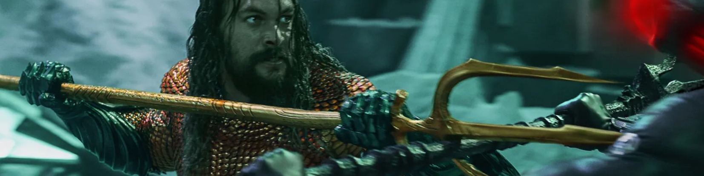

AQUAMAN
DC
re del regno sottomarino di Atlantide. Il suo vero nome è Arthur Curry ed è metà umano e metà atlantideo
- il suo corpo sopporta la pressione degli abissi, colpi violenti e temperature estreme.
- vive e respira perfettamente sott’acqua.
- il suo tridente può manipolare acqua ed energia e, in alcune versioni, controllare il clima.
- può affrontare creature gigantesche e potenti nemici.